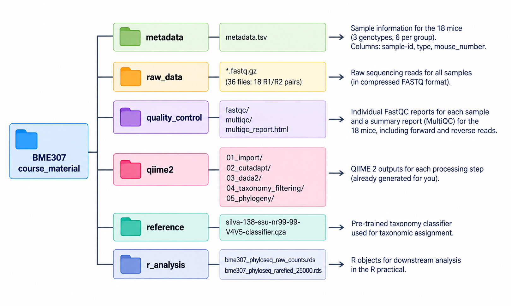
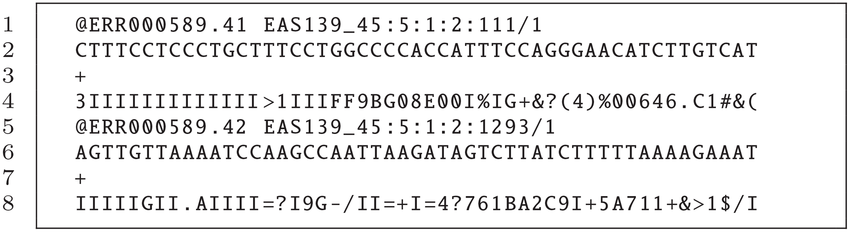

1. QIIME2 Workflow: From FASTQ reads to microbiome analysis objects¶
This practical follows 16S rRNA V4–V5 sequencing data from 18 mice: six wild type, six IL-10 deficient and six MUC2 deficient. We will explore gut bacterial community composition across the three mouse models, investigating patterns of microbial diversity.
The workflow follows the data from raw sequencing reads to the files that will later be combined and analyzed in RStudio.
What will you run during the practical?
You will inspect raw FASTQ files and run FastQC on selected files. The QIIME 2 processing has already been run for you. We will explain each QIIME 2 step and inspect its inputs and outputs, but you do not need to install or run QIIME 2 during the practical.
Workflow¶
FASTQ reads → quality control → primer trimming → denoising → ASVs
→ taxonomic classification → non-target filtering
→ phylogenetic tree reconstruction → files for phyloseq object generation in R
Folder structure¶

1. Inspecting the FASTQ files¶
The analysis begins with the sequencing output. Each mouse has an R1 file containing forward reads and an R2 file containing reverse reads. The two reads cover the same amplified DNA fragment from opposite directions and will later be joined.
Each FASTQ read is stored as an entry with four lines:
- The first line contains a sequence identifier, including information about the sequencing run and the cluster. It usually begins with an
@; - The second line contains the nucleotide calls of the sequence (A, C, G, T and occasionally N);
- The third line comprises plus a (+) sign, which acts as a separator;
- The fourth line, which is important for the next step, provides information on the quality of each of the base calls. These are Phred +33 encoded, using ASCII characters to represent the numerical quality scores.
An example of one entry of a FASTQ file:

The image above represents a single read; each FASTQ file contains many thousands of these entries.
Exercise 1 — Explore the raw reads
Select two FASTQ files belonging to the same mouse: one forward-read file (R1) and its corresponding reverse-read file (R2).
Copy these two files into a new folder called Raw_data_unzipped and unzip the copies. Keep the original .fastq.gz files unchanged.
On macOS, you can unzip a copied file from Terminal with:
On Windows, you can extract the copied files using your usual archive/extraction tool.
Explore the two uncompressed FASTQ files using the command-line commands introduced previously.
- Is the file format as expected?
- How many reads (entries) are there in each of these two files?
2. Quality Control: check sequence quality with FastQC and MultiQC¶
Sequencers do not read every nucleotide with equal confidence. Sequence quality can vary along a read and commonly declines towards the end, particularly for reverse reads.
FastQC evaluates each FASTQ file separately and summarizes features such as per-base sequence quality, read length, GC content and sequence duplication. A warning in FastQC is a diagnostic signal, not automatically a reason to discard a sample.
MultiQC combines the FastQC results from multiple samples into one report. This makes it easier to compare the 18 mice and the two read directions and to identify unusual samples.
Exercise 2A — FastQC
Run FastQC on the same R1 and R2 files that you selected and unzipped in Exercise 1.
First, navigate in Terminal (macOS/Linux) or PowerShell (Windows) to the main BME307_course_material folder.
Create a folder in which to save your FastQC results:
Now run FastQC on the two uncompressed FASTQ files in your Raw_data_unzipped folder:
FastQC will generate two files for each FASTQ file:
- an
.htmlreport that can be opened in a web browser; - a
.zipfile containing the underlying FastQC results.
To inspect one of the FastQC reports, navigate to the output folder and open the corresponding HTML file:
Replace filename.html with the name of the FastQC report you want to open.
Answer the following questions:
- Overall, which file has higher per-base quality scores, R1 or R2?
- In each file, at approximately which read position does base quality begin to decline?
Exercise 2B — MultiQC
Rather than inspecting all 36 FastQC reports individually, we can use MultiQC to compare the complete dataset in a single report.
A MultiQC report containing the FastQC results for all 36 FASTQ files has already been generated for you.
Open:
Work in pairs and compare the 18 mice across forward (R1) and reverse (R2) reads.
- Do forward (R1) and reverse (R2) reads have the same quality profile?
- Where does sequence quality begin to decline?
- Does any sample behave noticeably differently from the others? If so, which sample(s) and what do you observe?
Note
FastQC warnings are diagnostic signals, not automatic reasons to discard data. When paired-end reads are later truncated during denoising, sequence quality is not the only consideration. Enough overlap between R1 and R2 must remain for the two reads to be merged.
3. Read processing with QIIME 2¶
The next steps in the workflow have already been performed in QIIME 2 (2026.7). These include importing the FASTQ files, primer trimming, denoising, forward and reverse read merging, chimera removal, taxonomic classification, filtering of non-target sequences and phylogenetic tree reconstruction.
These processing steps generate the main microbiome analysis outputs, including the ASV count table, taxonomic classification table and phylogenetic tree.
You will not run these QIIME 2 commands during the practical. Instead, we will explain how each step was performed and inspect the corresponding output files. The commands are provided in collapsible boxes so that the analysis remains transparent and reproducible, and so that you can reproduce the workflow independently if you wish.
3.1 Importing the reads¶
As introduced in the QIIME 2 primer, QIIME 2 stores data in structured files called artifacts (.qza). Interactive visualizations are stored as .qzv files and can be opened using QIIME 2 View.
Importing the raw FASTQ files packages the complete paired-end dataset into a QIIME 2 artifact and begins a provenance record of how the data were processed.
Input: demultiplexed paired-end FASTQ reads
Outputs: imported paired-end reads and a visualization of read counts and quality
Show the QIIME 2 commands
qiime tools import \
--type 'SampleData[PairedEndSequencesWithQuality]' \
--input-path raw_data \
--input-format CasavaOneEightSingleLanePerSampleDirFmt \
--output-path qiime2/01_import/01-demux-paired-end.qza
qiime demux summarize \
--i-data qiime2/01_import/01-demux-paired-end.qza \
--o-visualization qiime2/01_import/01-demux-paired-end-summary.qzv
Exercise 3.1 — Inspect the imported reads
Open QIIME 2 View:
https://view.qiime2.org/
Drag and drop the following file into QIIME 2 View:
- How many forward and reverse reads are there overall?
- For the samples you examined with FastQC, how many forward reads and reverse reads are there?
- Do any samples stand out, for example by having a particularly high or low number of reads?
- Look at the plots and the quality scores. What trends do you observe in terms of quality-score changes in the forward and reverse reads?
- Scroll down to the Demultiplexed sequence length summary. What is the read length? How much overlap do you expect between the forward and reverse reads?
3.2 Primer trimming with Cutadapt¶
The bacterial 16S rRNA gene is longer than the region sequenced in this experiment. During PCR, short synthetic DNA sequences called primers bind on either side of the V4–V5 region and allow this region to be amplified.
Primer sequences are therefore technical components of the laboratory protocol, not biological variation among the mice.
To remove them, we use the QIIME 2 Cutadapt plugin, which searches for the expected forward and reverse primer sequences and trims them from the reads where they are found.
The primers used here are:
- Forward primer:
GTGYCAGCMGCCGCGGTAA - Reverse primer:
CCGYCAATTYMTTTRAGTTT
Letters such as Y and M are IUPAC ambiguity codes, allowing a primer position to match more than one nucleotide.
We can discard reads in which the expected primer is not detected because they may be incomplete, incorrectly oriented or unrelated to the intended amplicon.
Input: imported paired-end reads
Outputs: primer-trimmed reads, trimming statistics and a summary visualization
Show the QIIME 2 commands
qiime cutadapt trim-paired \
--i-demultiplexed-sequences qiime2/01_import/01-demux-paired-end.qza \
--p-front-f GTGYCAGCMGCCGCGGTAA \
--p-front-r CCGYCAATTYMTTTRAGTTT \
--p-match-adapter-wildcards \
--p-discard-untrimmed \
--p-cores 4 \
--verbose \
--o-trimmed-sequences qiime2/02_cutadapt/02-demux-trimmed.qza \
--o-stats qiime2/02_cutadapt/02-cutadapt-stats.qza
qiime demux summarize \
--i-data qiime2/02_cutadapt/02-demux-trimmed.qza \
--o-visualization qiime2/02_cutadapt/02-demux-trimmed-summary.qzv
qiime cutadapt tabulate \
--i-data qiime2/02_cutadapt/02-cutadapt-stats.qza \
--o-visualization qiime2/02_cutadapt/02-cutadapt-stats.qzv
Exercise 3.2 — Inspect primer trimming
Open QIIME 2 View and drag in:
-
What are wobble bases? What does
--p-match-adapter-wildcardsdo?
Tip: consult the Cutadapt documentation. -
What does
--p-discard-untrimmeddo? What kinds of reads might not get trimmed? -
For the same samples that you examined with FastQC, how many forward and reverse reads remain after primer trimming?
- What are the read lengths after primer trimming?
- What were the lengths of the forward and reverse primer sequences?
- Does the change in read length correspond to what you would expect after removing the primers?
If you would like to inspect the detailed Cutadapt trimming statistics, you can also open:
Examine the trimming statistics for the forward and reverse reads.
- Were the expected primers detected in most forward and reverse reads?
3.3 Denoising with DADA2¶
Even high-quality sequencing reads contain errors. If every observed sequence were treated as a genuine biological sequence, sequencing errors would artificially inflate the apparent diversity.
DADA2 models sequencing errors and infers the biological sequences most likely to have been present. These exact inferred sequences are called amplicon sequence variants (ASVs) and may differ by as little as one nucleotide.
The main DADA2 operations are:
- Filtering and truncation: low-quality reads are removed and, optionally, reads are shortened to a selected length.
- Error learning and denoising: repeated error patterns are learned from the data and used to distinguish likely sequencing errors from biological variants.
- Dereplication: identical reads are grouped together and represented as unique sequences with their corresponding abundances.
- Paired-read merging: compatible forward and reverse reads are joined using their overlapping region.
- Chimera removal: artificial sequences formed from two templates during PCR are identified and removed.
The truncation length must balance quality and overlap. Here, both forward and reverse reads were truncated to 225 bases. The truncation length was selected based on the quality profiles while retaining sufficient overlap for paired-read merging.
Input: primer-trimmed reads
Outputs: ASV count table, representative ASV sequences and denoising statistics
Show the QIIME 2 commands
qiime dada2 denoise-paired \
--i-demultiplexed-seqs qiime2/02_cutadapt/02-demux-trimmed.qza \
--p-trunc-len-f 225 \
--p-trunc-len-r 225 \
--p-n-threads 4 \
--o-table qiime2/03_dada2/03-table.qza \
--o-representative-sequences qiime2/03_dada2/03-rep-seqs.qza \
--o-denoising-stats qiime2/03_dada2/03-denoising-stats.qza
qiime metadata tabulate \
--m-input-file qiime2/03_dada2/03-denoising-stats.qza \
--o-visualization qiime2/03_dada2/03-denoising-stats.qzv
qiime feature-table summarize \
--i-table qiime2/03_dada2/03-table.qza \
--m-sample-metadata-file metadata/metadata.tsv \
--o-visualization qiime2/03_dada2/03-table.qzv
qiime feature-table tabulate-seqs \
--i-data qiime2/03_dada2/03-rep-seqs.qza \
--o-visualization qiime2/03_dada2/03-rep-seqs.qzv
After DADA2, three outputs are particularly important:
- an ASV count table, containing the unique sequences and their abundance in each mouse;
- representative sequences, a fasta file containing one DNA sequence for each ASV unique sequence;
- denoising statistics, showing how many reads remain through the different DADA2 processing stages.
Exercise 3.3 — Inspect the DADA2 outputs
1. Inspect the ASV count table
Open the following file in QIIME 2 View:
In the Overview tab:
- What does the number of features represent? How many ASVs were detected across the 18 samples?
- What does total frequency represent?
- Get together in pairs and calculate the percentage of reads retained after denoising for each sample, using the read counts after denoising from:
And the read counts before denoising from:
Calculate:
2. Inspect the representative ASV sequences
Open:
Examine the Sequence Length Statistics and the Sequence Table.
- What does one representative sequence represent?
- After denoising with DADA2, we have obtained a set of amplicon sequence variants (ASVs). Why are the lengths of these sequences different from the lengths of the reads in the original FASTQ files?
3. Inspect the denoising statistics
Finally, open:
This file shows how many reads remain at the different stages of DADA2 processing.
- What stages are shown in this file? During which DADA2 stage are most reads lost?
3.4 Taxonomic classification¶
An ASV sequence such as ACGT... does not by itself provide a familiar microbial name. Taxonomic classification connects each representative ASV sequence to taxonomic ranks such as domain, phylum, class, order, family and genus.
We perform this step using a classifier, which is a prediction model trained on sequences with known taxonomic labels from a reference database.
The classifier used here was built from SILVA 138.1 reference sequences and trained specifically on the V4–V5 region targeted in this experiment.
The classifier predicts the taxonomy of each representative ASV sequence and reports the most specific taxonomic assignment it can support, together with a confidence value. Classification may stop at a broader rank when the V4–V5 sequence cannot distinguish closely related taxa or when the reference database does not support a more specific assignment.
Inputs: representative ASV sequences and the trained classifier
Outputs: taxonomic classification artifact and visualization
Show the QIIME 2 commands
qiime feature-classifier classify-sklearn \
--i-classifier reference/silva-138.1-ssu-nr99-v4v5-classifier-qiime2-2026.7.qza \
--i-reads qiime2/03_dada2/03-rep-seqs.qza \
--o-classification qiime2/04_taxonomy_filtering/04-taxonomy.qza
qiime metadata tabulate \
--m-input-file qiime2/04_taxonomy_filtering/04-taxonomy.qza \
--o-visualization qiime2/04_taxonomy_filtering/04-taxonomy.qzv
Exercise 3.4 — Inspect the taxonomic classification
Open the following file in QIIME 2 View:
- Which taxonomic ranks are reported?
- Are all ASVs classified to genus level?
- Can you identify any non-target sequences (non-bacterial)? If so, what are they?
Advanced
- Choose one ASV from the taxonomy table and note its Feature ID.
Open:
Find the same Feature ID and copy its nucleotide sequence.
Use NCBI BLAST to search the sequence using blastn.
Compare the BLAST result with the taxonomic classification obtained in QIIME 2.
- Is the taxonomic assignment the same or different?
- At what taxonomic rank do the two methods agree?
3.5 Filtering non-bacterial sequences¶
The experiment targets the prokaryotic 16S rRNA gene, but the amplified reads are not necessarily exclusively from the bacterial gut community of interest.
Mitochondria and chloroplasts evolved from bacterial ancestors and retain related ribosomal genes, so broad 16S primers can also amplify them. Other non-bacterial sequences may also arise through non-specific amplification or limitations in taxonomic classification.
These sequences can represent genuine DNA observations, but they do not answer our question about the bacterial gut community. We therefore retain ASVs classified within Bacteria while excluding chloroplast and mitochondrial assignments.
Filtering must be consistent across connected data objects. If an ASV is removed from the ASV count table, its representative sequence must also be removed so that downstream files contain matching ASV identifiers.
Inputs: unfiltered ASV count table, representative sequences and taxonomy
Outputs: filtered bacterial ASV count table and matching representative sequences
Show the QIIME 2 commands
qiime taxa filter-table \
--i-table qiime2/03_dada2/03-table.qza \
--i-taxonomy qiime2/04_taxonomy_filtering/04-taxonomy.qza \
--p-include 'd__Bacteria' \
--p-exclude 'Chloroplast,Mitochondria' \
--p-mode contains \
--o-filtered-table qiime2/04_taxonomy_filtering/04-table-filtered.qza
qiime feature-table filter-seqs \
--i-data qiime2/03_dada2/03-rep-seqs.qza \
--i-table qiime2/04_taxonomy_filtering/04-table-filtered.qza \
--o-filtered-data qiime2/04_taxonomy_filtering/04-rep-seqs-filtered.qza
qiime feature-table summarize \
--i-table qiime2/04_taxonomy_filtering/04-table-filtered.qza \
--m-sample-metadata-file metadata/metadata.tsv \
--o-visualization qiime2/04_taxonomy_filtering/04-table-filtered.qzv
Exercise 3.5 — Inspect the filtered ASV count table
Open:
- How many ASVs remain after filtering?
- How many reads remain?
Checkpoint: the filtered dataset contains 497 ASVs, 18 mice and 953,756 reads.
3.6 Building a rooted phylogenetic tree¶
A phylogenetic tree models the evolutionary relationships among the representative ASV sequences. Each terminal tip represents one ASV, while the branching structure and branch lengths represent inferred sequence relationships.
QIIME 2 performs four main operations:
- Alignment: MAFFT aligns homologous nucleotide positions across the ASV sequences.
- Masking: highly variable or uninformative alignment positions are removed.
- Tree inference: FastTree estimates an unrooted phylogenetic tree from the aligned sequences.
- Rooting: midpoint rooting gives the tree a consistent root from which relationships can be interpreted.
The rooted tree provides information that taxonomic labels alone do not: it describes the amount of evolutionary history shared among ASVs. This information is required later for phylogenetic diversity measures such as Faith's phylogenetic diversity and UniFrac distances.
The tree is inferred from the sequenced 16S marker region; it is not a complete reconstruction of microbial evolution.
Input: filtered representative ASV sequences
Outputs: aligned sequences, masked alignment, unrooted tree and rooted tree
Show the QIIME 2 commands
qiime phylogeny align-to-tree-mafft-fasttree \
--i-sequences qiime2/04_taxonomy_filtering/04-rep-seqs-filtered.qza \
--p-n-threads 4 \
--o-alignment qiime2/05_phylogeny/05-aligned-rep-seqs.qza \
--o-masked-alignment qiime2/05_phylogeny/05-masked-aligned-rep-seqs.qza \
--o-tree qiime2/05_phylogeny/05-unrooted-tree.qza \
--o-rooted-tree qiime2/05_phylogeny/05-rooted-tree.qza
Exercise 3.6 — Explore the phylogenetic tree
The rooted phylogenetic tree has been exported from QIIME 2 in Newick (.nwk) format so that it can be visualised using a phylogenetic tree viewer.
Open:
qiime2/05_phylogeny/tree.nwk
Go to iTOL (Interactive Tree Of Life) and upload the .nwk file to visualise the tree.
Explore the tree and discuss:
- What does one terminal tip of the tree represent?
- Why must the tree-tip labels match the ASV identifiers in the ASV count table?
- Name one downstream diversity analysis that uses phylogenetic branch lengths.
Summary: From QIIME 2 to R¶
We have now followed the sequencing data from the original FASTQ reads to a set of processed outputs that describe the bacterial communities in our samples.
The main components that we will need for downstream microbiome analysis are:
Filtered ASV count table ──────┐
│
Taxonomic assignments ─────────┤
├──→ phyloseq object → analysis in R
Sample metadata ───────────────┤
│
Rooted phylogenetic tree ──────┘
Each of these components contributes different information:
- The filtered ASV count table contains the number of reads assigned to each bacterial ASV in each mouse.
- The taxonomic assignments describe the bacterial taxonomy associated with each ASV.
- The sample metadata contain information about the mice and their experimental groups.
- The rooted phylogenetic tree describes the phylogenetic relationships among the ASVs and will be required for phylogeny-aware diversity metrics such as UniFrac and Faith's phylogenetic diversity.
In preparation for the R practical, these components have been combined into a phyloseq object. The object will be provided to you so that we can focus on exploring the microbial communities, visualising the data and performing statistical analyses in R.
What happens next?
In the R workflow, we will use the phyloseq object to investigate:
- sequencing depth;
- taxonomic composition;
- alpha diversity within individual mice;
- beta diversity between mice;
- and whether the observed differences among the three mouse groups are statistically supported.